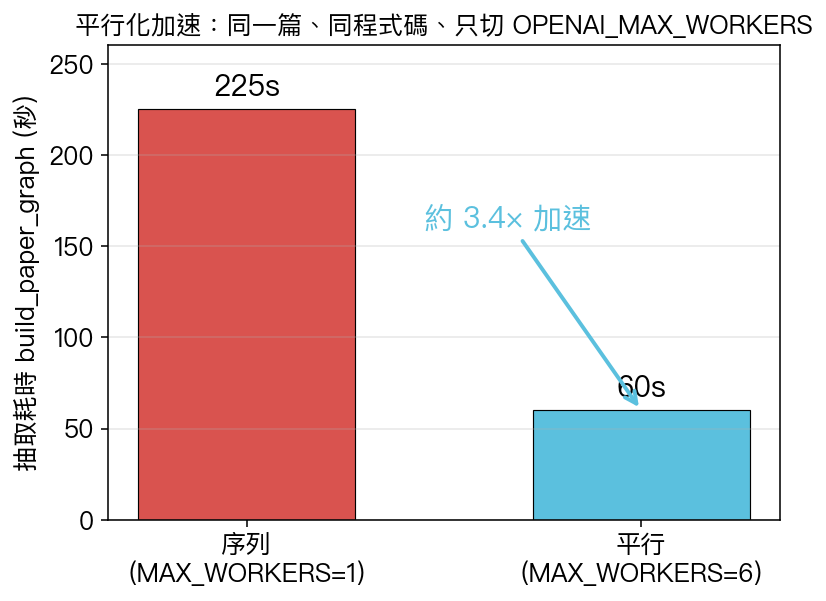
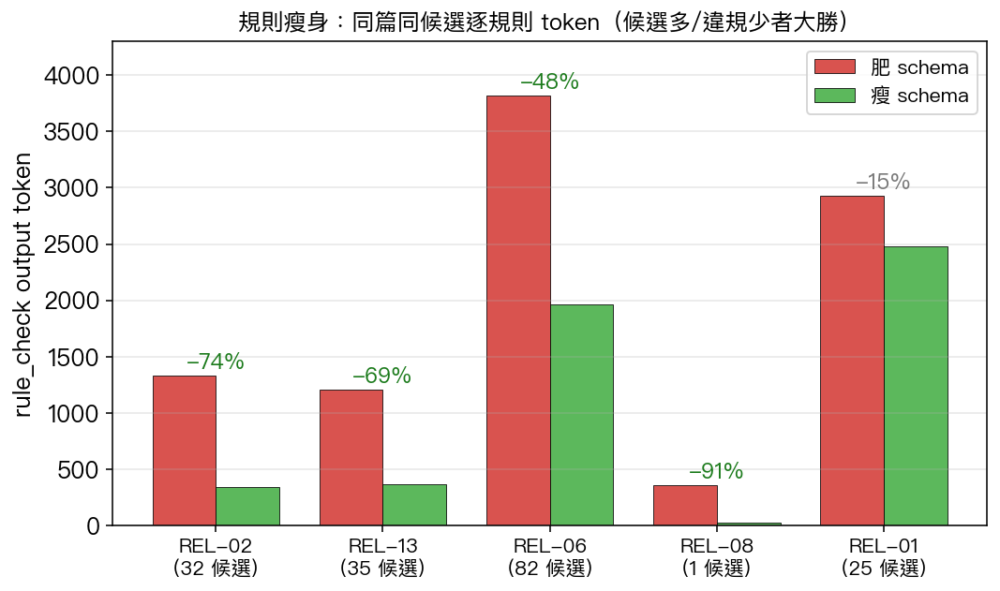
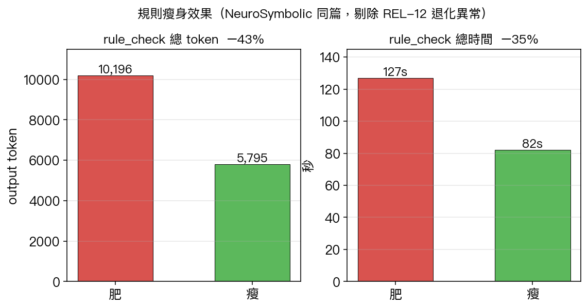
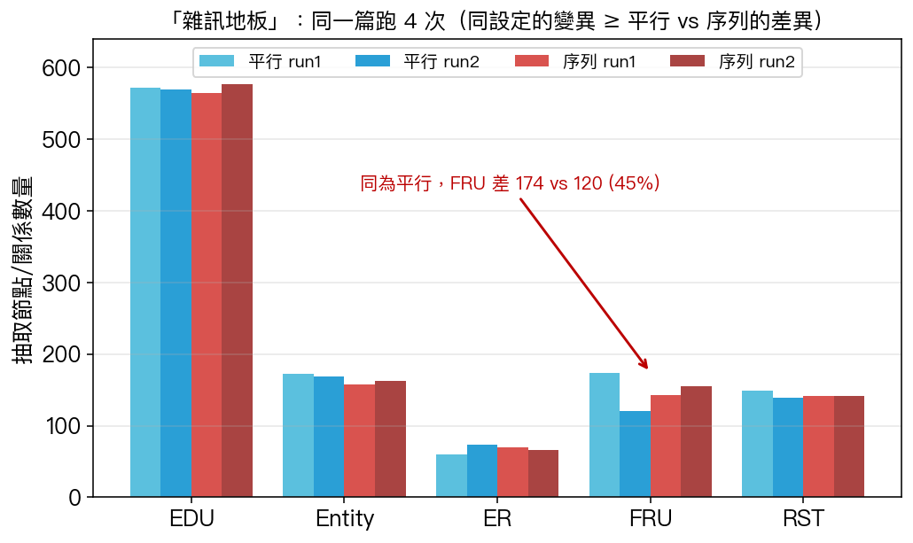
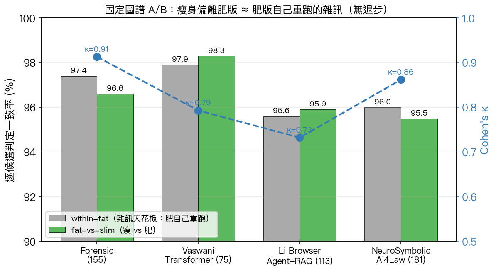
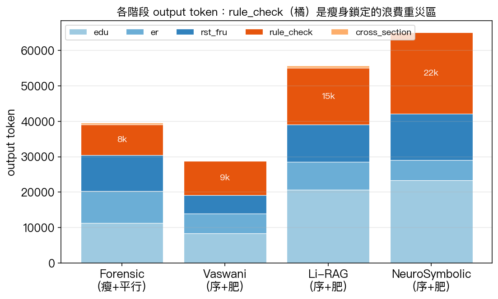
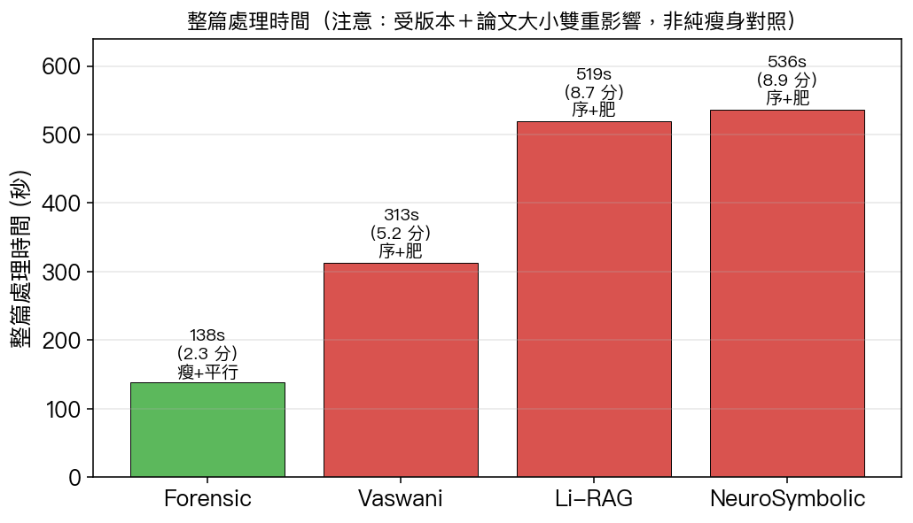
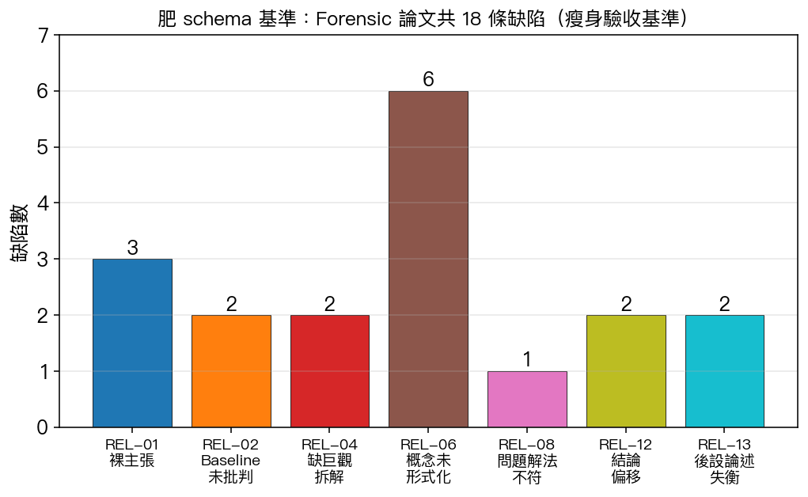

用途：給你做投影片的「詳細素材庫」。資訊刻意寫滿，你自己抓重點摘要即可。 涵蓋期間：上次報告（3.1.0，2026-05-20）之後的所有工作 → 至 2026-05-25。 模型：gpt-5.4 / gpt-5.4-mini（temperature=0）。部署機台：
140.115.54.62:8083（WIDM 實驗室）。 圖檔：本檔同層figures/，可直接拖進投影片。
這一期做了四類事：
| 類別 | 版本 | 一句話 |
|---|---|---|
| 🚀 效能大改 | 3.3.0 | 分析流程平行化 + 規則瘦身：整篇從約 9 分鐘降到約 2 分鐘、rule_check token −43~49%、成本下降，且用 4 篇論文的固定圖譜 A/B 證明判定品質沒退步。 |
| ✨ 體驗功能 | 3.2.0 / 3.4.0 | 3.2.0 新版自動偵測更新橫幅；3.4.0 上傳免填標題（LLM 自動讀論文標題）。 |
| 🐞 精修 | 3.4.1（待發） | 無法定位的缺陷不再給「在 PDF 中查看」假按鈕；REL-04/REL-12 統一走跨章節判定，定位率 100%。 |
| 🛠 維運 | — | 部署機台從 .48/.58 遷到公網直連的 .62；建立版本紀錄頁與語意化版本規範。 |
對論文最有價值的一點：在驗證效能改動的過程中，量化證實了「神經抽取層 run-to-run 不可重現」這個方法論事實，並據此設計出「固定圖譜 A/B + 雜訊地板」這套不需 ground truth 也能證明「無退步」的評估法。
3.0.0 2026-05-09 系統基線：KG + 13 條 REL 規則 + Human-as-judge
3.1.0 2026-05-20 PDF OCR 容錯 + 版本紀錄頁 ← 上次報告到這
───────────────────────────────────────────────────── 本期起點
3.2.0 2026-05-20 新版自動偵測 + 更新橫幅
3.3.0 2026-05-25 ★ 平行化 + 規則瘦身（效能大改 + A/B 驗證）
3.4.0 2026-05-25 論文標題自動偵測
3.4.1 （待發） 無定位缺陷修正 + REL-04/12 跨章節統一
語意化版本規範（本期建立，寫在 frontend/lib/version-log.ts）：
- MAJOR — 架構性破壞變更（換 KG schema、改 API 合約）
- MINOR — 新增向後相容功能（OCR 容錯、標題偵測）
- PATCH — bug 修復 / 不改對外行為（偵測閾值、文案、定位修正）
ThreadPoolExecutor，環境變數 OPENAI_MAX_WORKERS（預設 6，設 1 強制回序列）。pool.map 保序，結果順序與序列版一致 → 不影響可重現性宣稱。client() / driver() 改 thread-safe lazy singleton（避免併發初始化 race）。
| 設定 | 抽取耗時（build_paper_graph） |
|---|---|
序列 MAX_WORKERS=1 |
~225s |
平行 MAX_WORKERS=6 |
~60s |
| 加速 | 約 3.4× |
這是乾淨對照：同一篇、同程式碼、同輸入 spans，只切 worker 數。整篇「9 分→2 分」還疊加了瘦身與論文大小因素（見第 4 節），不能全歸功平行化；純並發效果就是這 3.4×。
required 從「全部 8 欄」縮成只剩 [candidate_index, violates]。violates=true 時才填。非違規候選只回 {index, violates:false}，幾乎零 output。
| 規則 | 候選 | 肥 token | 瘦 token | 變化 | 肥秒 | 瘦秒 |
|---|---|---|---|---|---|---|
| REL-08 | 1 | 357 | 31 | −91% | 8.0 | 1.0 |
| REL-02 | 32 | 1,330 | 341 | −74% | 14.8 | 4.2 |
| REL-13 | 35 | 1,211 | 371 | −69% | 12.5 | 4.7 |
| REL-06 | 82 | 3,814 | 1,967 | −48% | 42.5 | 24.8 |
| REL-01 | 25 | 2,928 | 2,478 | −15% | 37.9 | 34.7 |
| REL-12 ⚠️ | 1 | 456 | 3,614 | 異常 | 7.9 | 41.5 |

核心命題：效能改了，判定品質有沒有掉？ 沒時間做人工標註（ground truth），如何證明？
破 cache 把同一篇用瘦身版重跑，缺陷數從基準的 18 → 31。看起來像暴增，但：
| 指標 | 肥基準 | 瘦重跑 | 變化 |
|---|---|---|---|
| 缺陷總數 | 18 | 31 | ⚠️ 不可直接比 |
| 總 output | 49,351 | 39,645 | −20% |
| rule_check output | 16,887 | 8,633 | −49% |
| 成本 | $0.73 | $0.61 | −16% |
為何不能比：各規則的候選數本身就變了（REL-03 0→16、REL-01 13→24）。候選是 Cypher 從 KG 撈的 → 候選變＝上游抽出的 KG 不同 → 這是抽取層的非決定性，發生在規則之前，與瘦身無關。
同一篇、同程式碼、同輸入，只切 worker 數，跑 4 次（2 平行 + 2 序列）：

| run | 設定 | EDU | Entity | ER | FRU | RST | 耗時 |
|---|---|---|---|---|---|---|---|
| par1 | 平行 | 572 | 172 | 60 | 174 | 149 | 67s |
| par2 | 平行 | 570 | 169 | 74 | 120 | 139 | 59s |
| seq1 | 序列 | 564 | 158 | 70 | 143 | 142 | 222s |
| seq2 | 序列 | 577 | 163 | 66 | 155 | 141 | 230s |
關鍵讀法： - 同為平行的 par1 vs par2，光 FRU 就差 174↔120（45%），比「平行 vs 序列」的均值差（147 vs 149）還大。 - seq 的每個值都落在 par 的範圍內 → 變異來自 LLM 抽取本身，不是平行化。 - 平行化無辜（只改速度不改內容），且 FRU 最不穩（同條件 ±20%+），這正是 4.1 候選暴動的根因。 - 結論：任何準確度量測都不能單跑，必須多跑取分布（老師要的「鬍鬚圖 / boxplot」）。
方法：取一張已建好的 KG（凍結候選當常數）→ 只切 verdict schema（肥/瘦）→ 對同一批候選各跑 5 次 → 逐候選比 violates。
抽取/平行化的雜訊被完全排除，唯一變數＝schema。
- within-fat（肥自己跑 5 次的兩兩一致率）＝ 雜訊天花板。
- fat-vs-slim ≈ within-fat → 瘦身跟「肥再跑一次」分不出來 → 等價。

| 論文 | 候選 | within-fat（雜訊天花板） | fat-vs-slim | Cohen's κ | 違規 肥→瘦 |
|---|---|---|---|---|---|
| Forensic | 155 | 97.4% | 96.6% | 0.913 | ≈ |
| Vaswani-Transformer (2017) | 75 | 97.9% | 98.3% | 0.793 | 2→3 |
| Li-Browser-Agent-RAG (2025) | 113 | 95.6% | 95.9% | 0.732 | 10→6 |
| NeuroSymbolicAI4Law | 181 | 96.0% | 95.5% | 0.862 | 21→20 |
| 合計 | 524 | — | — | — | — |
判讀： - 四篇全部 fat-vs-slim ≈ within-fat（差距 ±0.8% 內） → 瘦身偏離肥版的程度 = 肥版自己重跑偏離自己的程度。在雜訊內無法區分 → 瘦 ≡ 肥。 - 違規數沒有系統性方向（Vaswani 瘦略多、Li-RAG 略少、NeuroSymbolic 幾乎同）→ 偏離是雜訊，不是系統性退步。 - κ 在違規稀少的篇較低（0.73–0.79）是 κ 對低盛行率的已知敏感性（高一致率但低 κ），非瘦身問題。
前提：老師已口頭認可肥（舊）版「還不錯」。 本驗證證的是 「瘦 ≡ 肥」（no regression） → 瘦版繼承肥版的認可 → 不需重新做 ground truth 就能上線。
四篇走同一條 pipeline，差別只在「步驟數量」隨論文結構放大（章節段數、候選規則數）。
呼叫數 = 3×章節段 + 有候選規則數 + 1（cross-section）。例：Forensic 3×9+11+1 = 39。

| 階段 | Forensic（瘦） | Vaswani（肥） | Li-RAG（肥） | NeuroSymbolic（肥） |
|---|---|---|---|---|
| edu | 11,293 | 8,437 | 20,737 | 23,310 |
| er | 9,015 | 5,553 | 7,818 | 5,712 |
| rst_fru | 10,143 | 5,222 | 10,510 | 13,171 |
| rule_check | 8,633 | 9,638 | 15,978 | 22,938 |
| cross_section | 561 | 20 | 678 | 20 |

| 論文 | 版本 | 章節段 | 總呼叫 | 總 output | 成本 | 處理時間 |
|---|---|---|---|---|---|---|
| Forensic | 瘦+平行 | 9 | 39 | 39,645 | $0.61 | 138s（2.3 分） |
| Vaswani | 序+肥 | 6 | 30 | 28,870 | $0.42 | 313s（5.2 分） |
| Li-RAG | 序+肥 | 7 | 34 | 55,721 | $0.86 | 519s（8.6 分） |
| NeuroSymbolic | 序+肥 | 7 | 33 | 65,151 | $1.10 | 536s（8.9 分） |
讀法： - rule_check 是最大成本/時間黑洞（橘色），序列三篇佔總時間約 45–48% → 正是平行化 + 瘦身雙重受益的階段。NeuroSymbolic 肥版光 rule_check 就吃 22,938 token（$0.52）。 - ⚠️ 這張時間圖不是純瘦身對照：Forensic 是瘦+平行、其餘是序+肥，時間同時受版本與論文大小影響。乾淨對照看第 2 節（同篇 3.4×）與第 3 節（同篇 token −43%）。
Forensic 論文（肥版）共抓到 18 條缺陷，作為「瘦身不可掉以下這些」的回歸基準。

| 規則 | 缺陷類型 | 條數 |
|---|---|---|
| REL-01 | NakedClaim 裸主張 | 3 |
| REL-02 | BaselineNotCritiqued baseline 未批判 | 2 |
| REL-04 | NoMacroDecomposition 缺巨觀拆解 | 2 |
| REL-06 | ConceptNotFormalized 概念未形式化 | 6 |
| REL-08 | ProblemSolutionMismatch 問題解法不符 | 1 |
| REL-12 | ConclusionMisaligned 結論偏移 | 2 |
| REL-13 | MetaDiscourseImbalance 後設論述失衡 | 2 |
18 條逐條明細（章節 / 嚴重度 / 信心 / 中文說明 / 建議）見
docs/baselines/forensic-fatschema-baseline.md附錄。
/version 端點；前端 watcher 用 bundle 內建版本比對伺服器當前版本，不一致時於畫面底部顯示不可關閉的更新橫幅，點「立即更新」即重整。某些缺陷（如 REL-04 NoMacroDecomposition）的「證據 EDU = 0 個」，卻仍顯示「📄 在 PDF 中查看」按鈕 → 點了沒反應。
evidence_edu_ids。OPTIONAL MATCH MENTIONED_IN 撈 EDU id，所以有定位。defect-panel.tsx）：缺陷的 evidence_edu_ids 對不到任何圖譜節點時，隱藏「在 PDF 中查看」按鈕，不給假按鈕。rules.py）：REL-04 / REL-12 統一只走 cross-section pass（跨章節判定會強制 ≥2 證據 EDU），不再產生「逐章節版的無定位缺陷」。
- 驗證：重跑 Forensic，REL-04/08/12 全部來自 cross-section、證據 8/9/8 個（有定位），16 條缺陷 0 條無定位（原本約 8% 無定位）。狀態：兩個 commit 在
feat/next（尚未 push / 合併 / 部署）。屬 bug fix/refinement → 發版會是 PATCH 3.4.1。
.48 repo 文件寫死的舊機（DEPLOY.md / docker-compose.prod.yml / Caddyfile 內）
.58 2026-05-22 試用 → 前面有 NAT 閘道未轉發 8083 → 對外連不到 → 棄用
.62 網管改派，公網 IP 直接綁機器（無 NAT）→ 8083 對外直通 ✅ 現行
.env 覆寫 PUBLIC_BASE / CORS_ORIGIN_REGEX / NEO4J_PASSWORD。PUBLIC_BASE 會 cascade 成 FRONTEND_URL 與前端 build-time 的 NEXT_PUBLIC_API_BASE → 換 IP/port 一定要 --build 重建前端。.62 已依序部署 3.1.0 → 3.3.0 → 3.4.0，皆驗證 /version 回正確版本、對外 IP 自打 8083 回 200。TransientError() 失敗（neo4j 暖機 + 建 constraint 撞 transient，非 OpenAI、非 code bug）→ 重傳即成功。本期把分析流程平行化 + 規則判定瘦身，rule_check output token 省約 43–49%、整篇處理（同篇純並發）加速約 3.4×、成本下降；並在 4 篇論文、524 個候選的固定圖譜 A/B 上證明瘦身與原版判定一致率（95.5–98.3%）與「原版自身重跑」的雜訊天花板無法區分（Cohen's κ 0.73–0.91），無準確度退步。過程中量化證實神經抽取層 run-to-run 不可重現，並建立「多跑取分布 + 固定中間產物」的評估方法論。
| 版本 | 主要 commit | 內容 |
|---|---|---|
| 3.2.0 | 322c00e |
feat(frontend): detect new deploys and prompt a refresh |
| 3.3.0 | 396bef7 |
perf(pipeline): parallelize section extraction and rule checks |
| 3.3.0 | b72854a |
perf(rules): only emit verdict detail fields for actual violations（瘦身） |
| 3.3.0 | da63379 |
fix(concurrency): thread-safe lazy init for client()/driver() |
| 3.3.0 | 9995ae0 |
test(pipeline): garble detection + OCR routing 單元測試 |
| 3.3.0 | 6ed95e9 |
docs: 規則瘦身驗證報告（4 篇 A/B） |
| 3.3.0 | 466a182 / 597f21b |
merge feat/parallel-pipeline / 發版 3.3.0 |
| 3.4.0 | ae1fe50 |
feat(title): 未填標題時 LLM 自動偵測 |
| 3.4.0 | 4f4590c / 6043b23 |
merge feat/ui-polish / 發版 3.4.0 |
| 3.4.1（待） | f64415c |
fix(ui): 無可定位證據時隱藏「在 PDF 中查看」按鈕 |
| 3.4.1（待） | 8ec871a |
fix(rules): REL-04/REL-12 只走 cross-section、消除無定位缺陷 |
回退路徑：
git revert -m 1 466a182（再 revert 597f21b）即回肥 schema / 序列版。
| 檔名 | 內容 | 建議用於哪張投影片 |
|---|---|---|
fig2_parallel_speedup.png |
平行 vs 序列加速 3.4× | 第 2 節 平行化 |
fig3_noise_floor.png |
雜訊地板（4 跑變異） | 第 4.2 節 抽取非決定性 |
fig4_slim_token_per_rule.png |
逐規則瘦身 token | 第 3 節 瘦身 |
fig4b_slim_totals.png |
rule_check 總 token/時間 −43%/−35% | 第 3 節 瘦身 |
fig5_ab_agreement.png |
固定圖譜 A/B 一致率 + κ | 第 4.3 節 主驗證 |
fig6_defect_baseline.png |
18 條缺陷分佈 | 第 6 節 基準 |
fig7_stage_token_stack.png |
各階段 token 堆疊 | 第 5 節 處理量 |
fig8_processing_time.png |
整篇處理時間 | 第 5 節 處理量 |